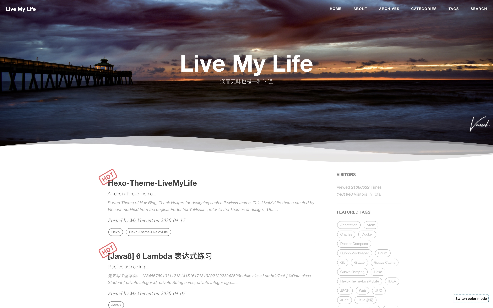
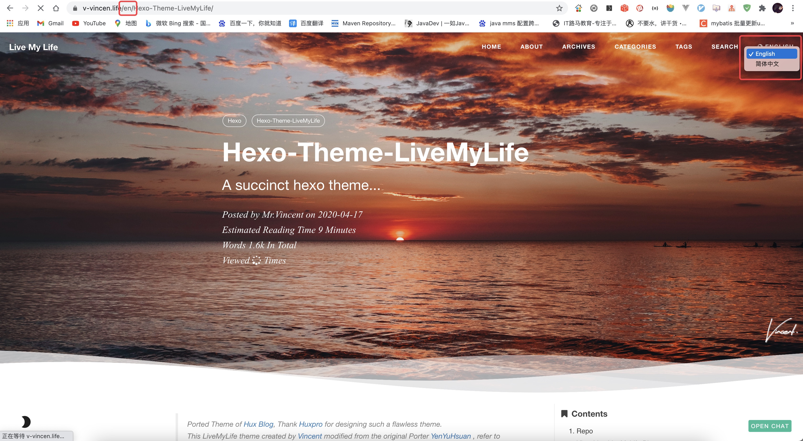

Hexo-Theme-LiveMyLife
移植 Hux Blog 的主题，感谢 Huxpro 设计了如此完美的主题。
由 Vincent 创建的 LiveMyLife 的主题修改来源 YenYuHsuan，参考主题 dusign、Utone，感谢 dusign、Utone。
仓库
Github 仓库地址：https://github.com/V-Vincen/hexo-theme-livemylife
Gitee 仓库地址：https://gitee.com/V_Vincen/hexo-theme-livemylife
预览 LiveMyLife 博客 ➾

快速开始
为了方便起见，我发布了整个项目，因此您可以按照下面的说明进行操作，然后就可以轻松自定义您自己的博客！
让我们开始!!!
安装 Node.js 和 Git
1 | For Mac |
Windows：下载 & 安装 Node.js。-> Node.js
Windows：下载 & 安装 Git。-> Git
安装 Hexo
1 | npm install -g hexo-cli |
什么是 Hexo?
Hexo 是一个快速、简洁且高效的博客框架。Hexo 使用 Markdown（或其他渲染引擎）解析文章，在几秒内，即可利用靓丽的主题生成静态网页。
设置你的博客
1 | hexo init blog |
更多的命令 -> Hexo Commands
主题使用
初始化
1 | cd blog |
设置主题
修改 theme 属性值，在 _config.yml 配置文件中。
1 | # Extensions |
启动服务
1 | hexo generate # or hexo g |
启动本地服务器。 默认访问地址 http://localhost:4000/。
更多命令 -> Hexo Commands
配置
使用您自己的信息修改 _config.yml 配置文件，尤其是以下部分：
网址信息配置
将以下信息替换为您自己的信息。
1 | # Site |
语言国际化 (i18n)
若要让您的网站以不同语言呈现，您可使用国际化（internationalization）功能。-> 文档：How to Use Internationalization（i18n）
1 | # Internationalization (i18n) Setting |
English 预览：

Chinese 预览：

CDN 配置
JsDelivr JsDelivr是一种免费，快速，可靠和自动化的CDN，可用于开源。如何使用 Jsdelivr？-> 文档：免费 CDN 提速 Github 静态资源访问
1 | # CDN Setting |
注意： Hexo-theme-livemylife 主题中有大量的 css、js 和 images，为了提高访问速度，主题中所有资源文件都使用了 JsDelivr CDN（内容分发）。但仅适用于 Github Pages 部署方式。-> 文档：How to apply JsDelivr CDN in Hexo-theme-livemylife Theme
站点设置
将自定义图片放在 img 目录中。
1 | # Site settings |
网站图标设置
1 | favicon: img/avatar/favicon.jpg |
签名设置
将您的签名图片复制到 <root>/img/signature 并修改配置文件 _config.yml。
1 | signature: true # show signature |
如何制作签名 -> Free Online Signature
波浪设置
1 | # Wave settings |
案例：

社交网络服务设置
如果您不想显示它，则可以直接将其删除。
1 | # SNS settings |
侧边栏设置
将您的头像复制到 <root>/img/avatar 并修改配置文件 _config.yml。
1 | sidebar: true # whether or not using Sidebar. |
评论系统设置
Hexo-Theme-LiveMyLife 主题暂时支持三种评论方式。我使用 gitalk 为默认评论系统。
Gitalk
Gitalk 是基于 GitHub Issue 和 Preact 的现代化的评论组件。 有关详细的配置方法，请参考 Gitalk 官方文档。
1 | # Gitalk Settings |
Gitment
Gitment 是一个基于 GitHub Issues 的评论系统，可以在前端使用它，而无需任何服务器端实现。有关详细的配置方法，请参见 Gitment 官方文档。
1 | ## Gitment Settings |
Disqus
如果你想要使用 Disqus 评论系统，则必须有代理。
1 | # Disqus settings |
站点分析设置
如何配置站点分析? -> 文档：Analytics and Sitemap Settings
1 | # Analytics settings |
站点地图设置
如何配置站点地图? -> 文档：Analytics and Sitemap Settings
1 | # Google sitemap |
置顶图标设置
我使用的置顶图标是键头，你可以在 sourcre/css/images 目录下替换你自己想要的图标。
文章标签
您可以选择是否显示博文标签。
1 | home_posts_tag: true |
案例：

Markdown 渲染器
我使用的 markdown 渲染引擎插件是 hexo-renderer-markdown-it。
1 | # Markdown-it config |
安装 Mathjax（数学公式渲染器）
要安装 Mathjax，请单击 How to Use Mathjax 以获取详细的教程。
Anchorjs（锚点）设置
如果你想要更改文章目录标题前部的锚点 “❡”，则可以到 layout/_partial/anchorjs.ejs 目录下进行更改。如何使用 anchorjs，请参阅 AnchorJS 以获取详细示例。
1 | # Anchorjs Settings |
1 | async("//cdn.bootcss.com/anchor-js/1.1.1/anchor.min.js",function(){ |
博文置顶
1 | # article top |
Hexo-theme-livemylife 主题添加了文章顶部功能，只要在您的 markdown 笔记中添加属性sticky: number 配置，文章按此数字排序。
案例：

文章字数统计设置
WordCount 是 Hexo 的文章字数统计插件. 有关详细的配置方法，请参见 WordCount 文档。
1 | # Dependencies: https://github.com/willin/hexo-wordcount |
Busuanzi（不蒜子）设置
Busuanzi 是一个网站流量统计插件。如何使用 Busuanzi，有关详细示例，请参见 Busuanzi 文档。
1 | ## Dependencies: https://busuanzi.ibruce.info/ |
顶部滚动进度条设置
1 | # top scroll progress |
著作权声明设置
1 | tip: |
社交分享博文设置
1 | #Docs: https://github.com/overtrue/share.js |
Viewer（图片预览）设置
Viewer 是一个简单的 jQuery 图片预览插件. 让我们首先看一个 demo。有关详细配置，请参见 Viewer 官方文档。 如果要修改 Viewer 的 options 设置，则可以到 sourcre/js/viewer/pic-viewer.js 目录下修改。
1 | # Viewer config |
主题模式设置
Hexo-Theme-LiveMyLife 主题暂时支持两种主题模式。
1 | # ThemeColor config |
明亮主题模式预览：

黑暗主题模式预览：

鼠标点击效果设置
1 | # Mouseclick config |
鼠标点击效果预览：

背景绸带效果设置
1 | ribbonDynamic: true |
背景绸带效果预览：

背景线画布效果设置
1 | bglinecanvas: true # The special effects will take up a lot of cpu resorces, please open it carefully. |
背景线画布效果预览：

搜索设置
1 | # Dependencies: https://github.com/V-Vincen/hexo-generator-zip-search |
Gitter（聊天室）
Gitter 是一个聊天和网络平台，通过消息、内容和发现，帮助管理、发展和连接社区。 详细配置方法请查看 Gitter 官方文档。
1 | ## Docs:https://gitter.im/?utm_source=left-menu-logo |
部署
替换为你自己的仓库地址。
1 | deploy: |
Hexo 常用命令
1 | hexo new post "<post name>" # you can change post to another layout if you want |